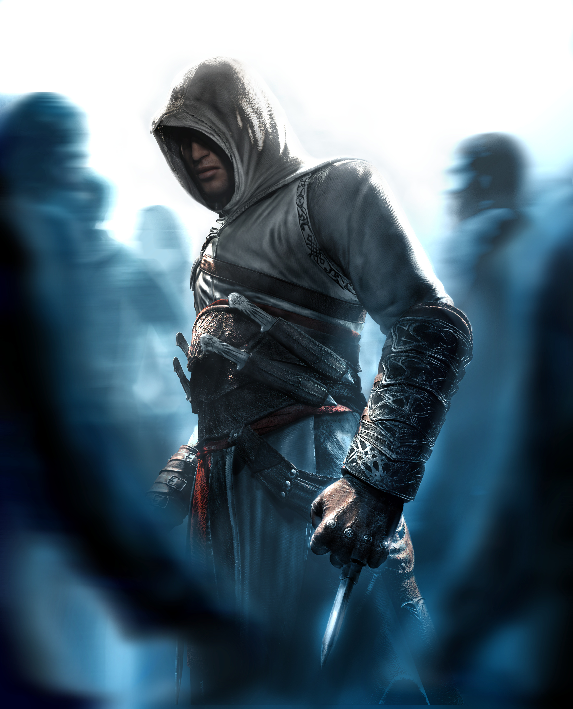

Saga Assassin's Creed

Desmond Miles é um bartender que é sequestrado por uma poderosa empresa chamada Abstergo. Embora em cativeiro, Desmond é informado que deve usar uma máquina chamada Animus, criada pelas Indústrias Abstergo, para reviver as memórias de seus ancestrais. Ele é obrigado a aceitar usar a máquina para reviver as memórias de seu ancestral, Altaïr Ibn-La'Ahad.
Altaïr, o primeiro ancestral acompanhado por Desmond, é um membro de um grupo denominado Assassins (Assassinos). Este grupo vive sob três leis absolutas:
•Nunca matar uma pessoa considerada inocente;
•Ser sempre discreto;
•Nunca comprometer a Irmandade.
Entretanto, por causa de sua arrogância e descuido, Altaïr quebra essas leis, desonrando-se e comprometendo a Irmandade. A fim de recuperar seu antigo status, Altaïr deve caçar e matar nove alvos a mando de seu mestre, Al Mualim. Altaïr relutantemente aceita a tarefa e, um a um, assassina oito dos nove homens. Cada um de seus alvos, minutos antes da morte, fala sobre um membro que Altaïr nem imagina que faz parte da caçada do reino dos perdidos aos Pedaços do Éden. Por fim, sua nona vítima é Robert de Sablé, o líder dos Cavaleiros Templários e principal alvo de Altaïr.
Ao alertar o rei Ricardo Coração de Leão, líder do exército cruzado, sobre a traição de Robert de Sablé, ele permite um duelo até a morte entre Altaïr e Robert. Após sua derrota, Robert de Sablé revela toda a verdade, confessando a traição. Robert confessa também que não eram nove, mas dez conspiradores para obter o Pedaço do Éden.
O décimo era seu mentor, Al Mualim, que queria manter os artefatos todos para si e, portanto, enviou Altaïr, seu melhor homem, para matar os outros nove. De volta a Masyaf, fortaleza dos assassinos, Al Mualim tinha tomado controle sobre as mentes das pessoas usando um Artefato do Éden (Maçã do Éden, como se fala no jogo). Ao chegar ao local, Altaïr é avisado por um dos moradores do que estava acontecendo. Ao se aproximar do castelo onde treinavam os assassinos, Altaïr é atacado por seus próprios companheiros. Mas, já encurralado e sem esperança, Altaïr recebe uma ajuda inesperada de amigos de outras cidades.
O décimo era seu mentor, Al Mualim, que queria manter os artefatos todos para si e, portanto, enviou Altaïr, seu melhor homem, para matar os outros nove. De volta a Masyaf, fortaleza dos assassinos, Al Mualim tinha tomado controle sobre as mentes das pessoas usando um Artefato do Éden (Maçã do Éden, como se fala no jogo). Ao chegar ao local, Altaïr é avisado por um dos moradores do que estava acontecendo. Ao se aproximar do castelo onde treinavam os assassinos, Altaïr é atacado por seus próprios companheiros. Mas, já encurralado e sem esperança, Altaïr recebe uma ajuda inesperada de amigos de outras cidades.
Ao encontrar Al Mualim, Altaïr exige respostas, e é exatamente o que seu mestre lhe dá. Depois de confessar que sempre planejou fingir se juntar aos outros para conseguir os artefatos para si, Al Mualim e Altaïr travam uma grande batalha. Mesmo usando um dos artefatos encontrados, Al Mualim sucumbe, com o Aprendiz ganhando do Mestre. Altaïr jura guardar um dos Pedaços do Éden consigo, definindo assim sua jornada. A memória que Abstergo estava procurando, onde se localiza o Pedaço do Éden, revela que é apenas um de 28 que estão espalhados por todo o mundo.
De volta a 2012, a Abstergo envia uma equipe para recuperar tantas peças quanto possível. Decidindo que não precisam mais de Desmond, dão ordens para matá-lo. Lucy Stillman, uma empregada da Abstergo que revelou a Desmond que é uma assassina disfarçada, convence-os a não matá-lo até que recuperem as peças, dando-lhe tempo.
Desmond é deixado sozinho na sala do Animus e, pelo uso da visão de águia herdada de Altaïr pelo "efeito sangria" causado pelo uso prolongado do Animus, ele vê muitos símbolos desenhados com sangue nas paredes de sua sala e nos pisos do laboratório. Estes símbolos contêm referências ao fim do mundo em muitas línguas diferentes. Desmond agora precisa escolher se vai tentar compreender os símbolos e deter os Templários ou fugir e tentar voltar à vida que tinha.